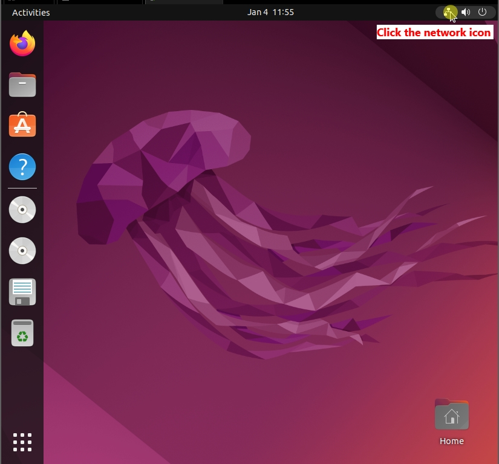
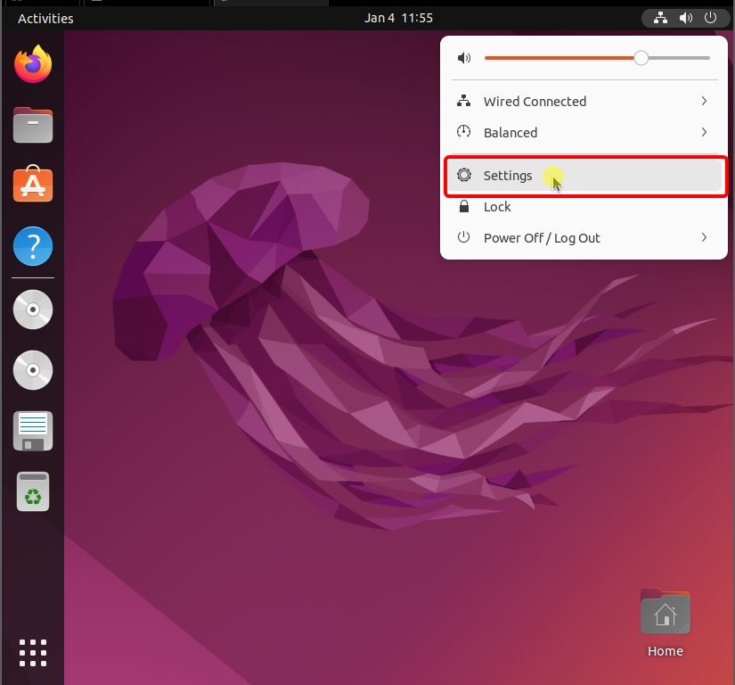
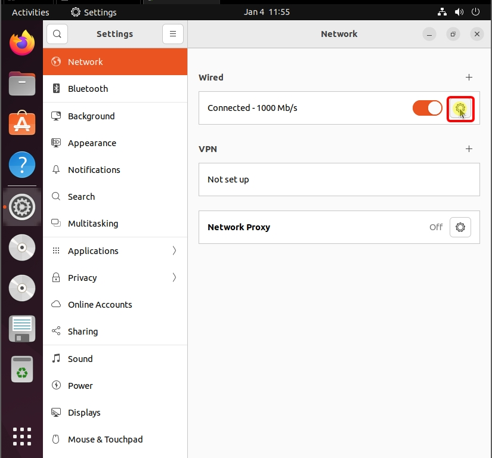
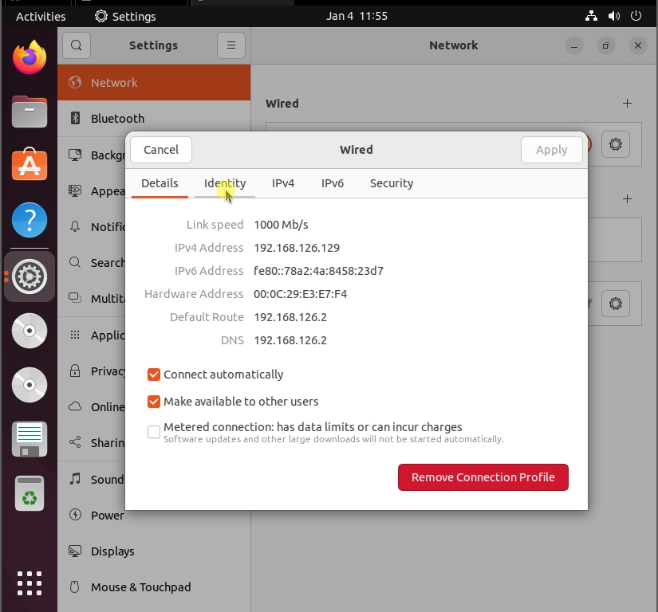
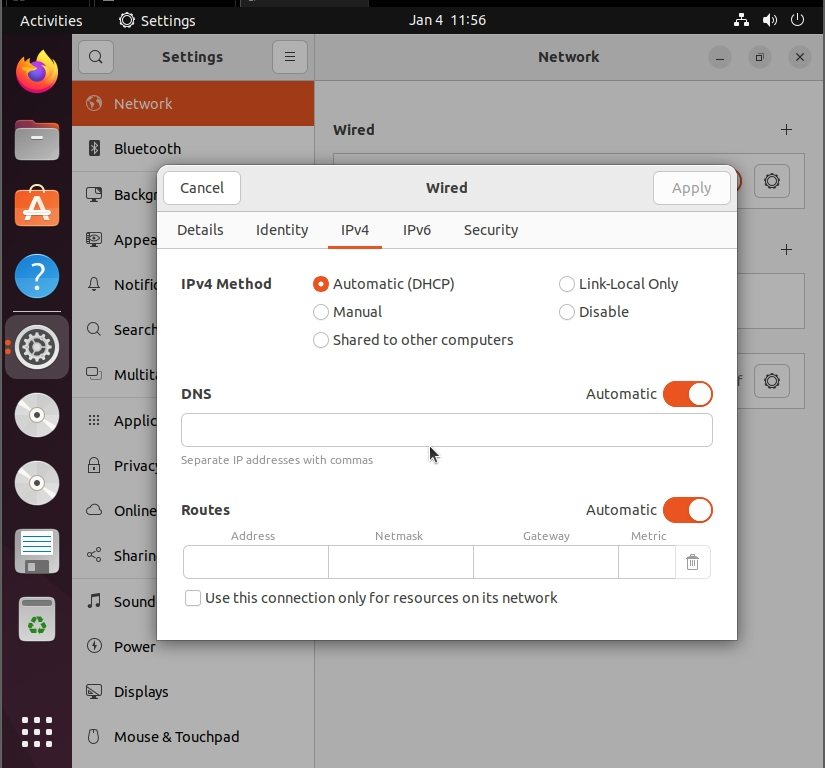
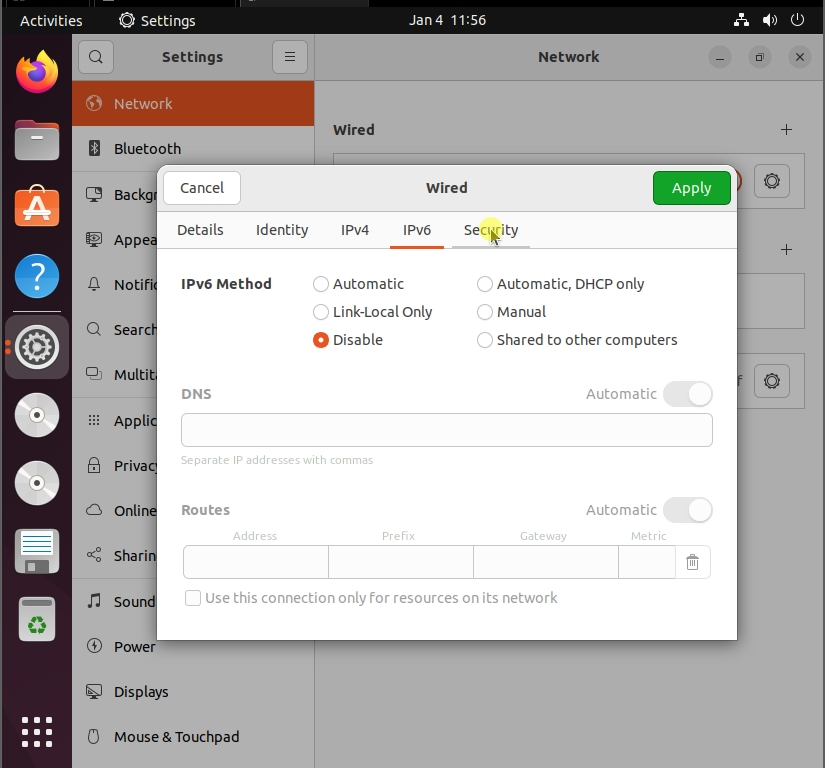
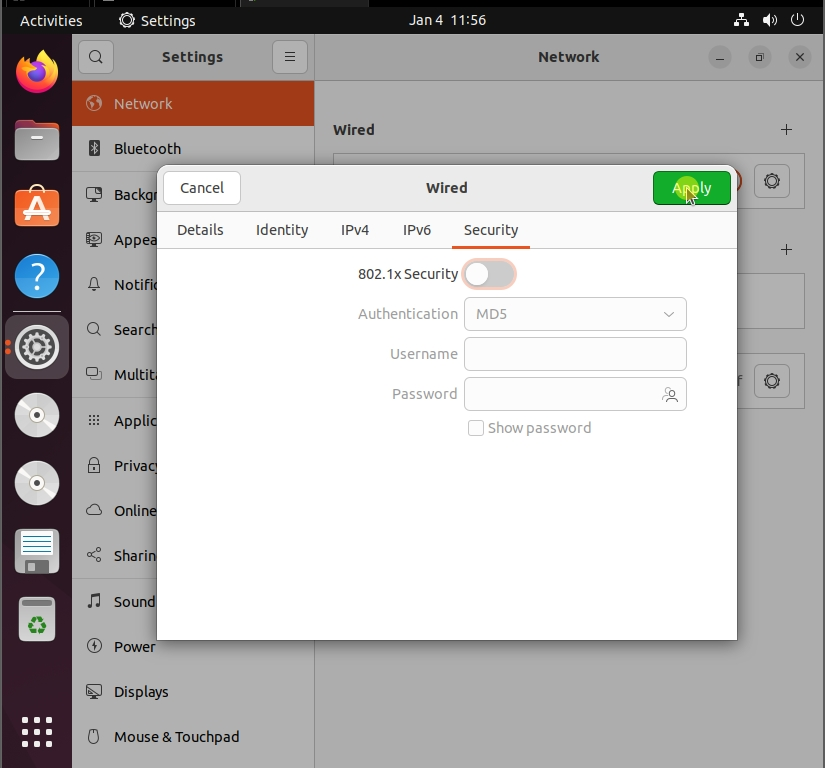

On Ubuntu, we can access our network settings as follows:




The main Details screen

IPv4 Properties. The likely place where you would edit your network settings if needed to connect to AD.
No changes were required in my case.

You can disable IPv6 here if you will not be using it
